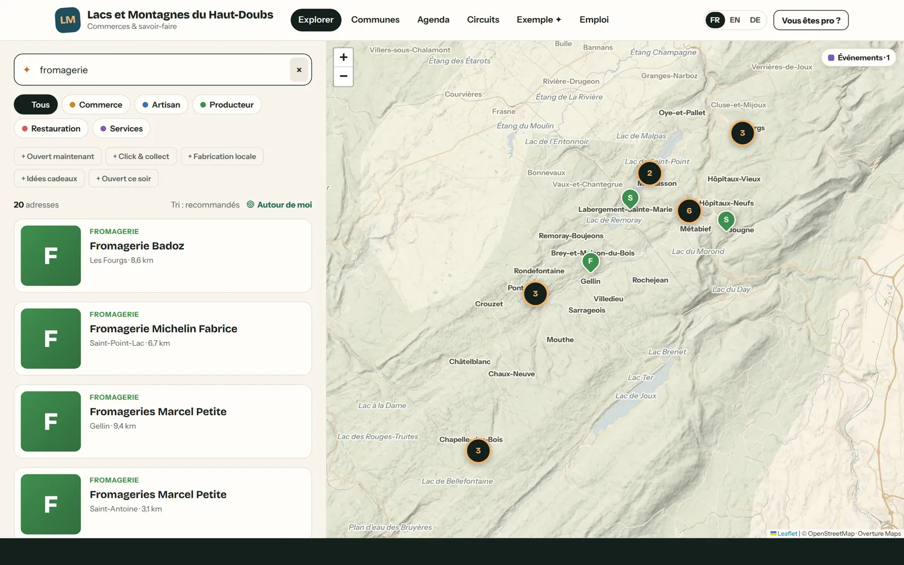
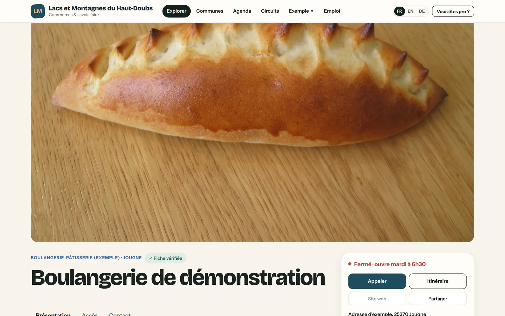
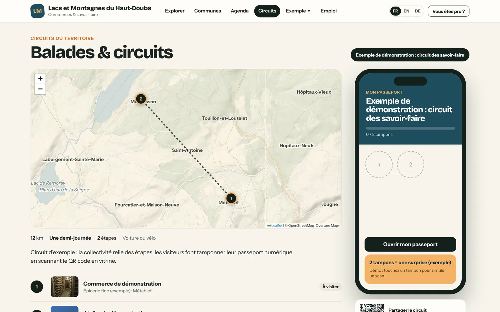
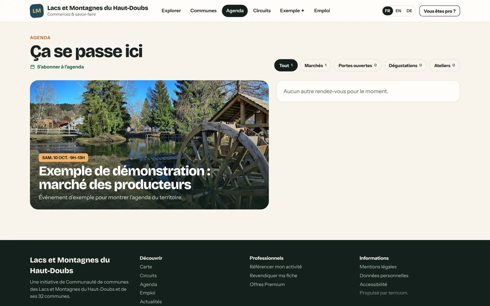
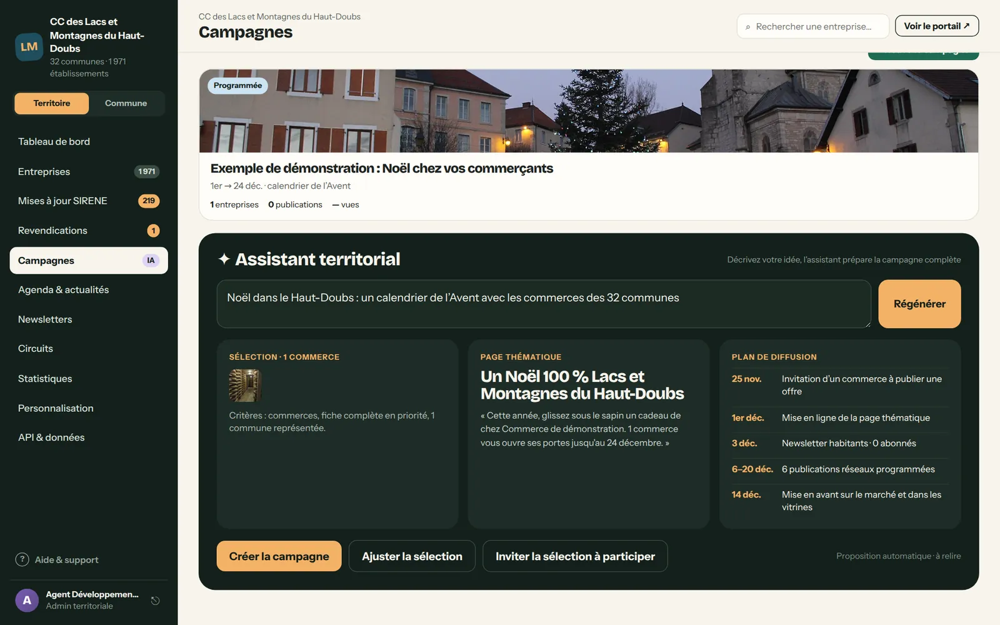
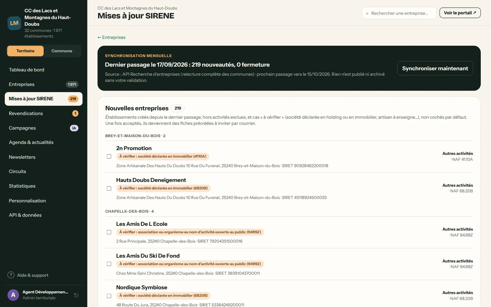
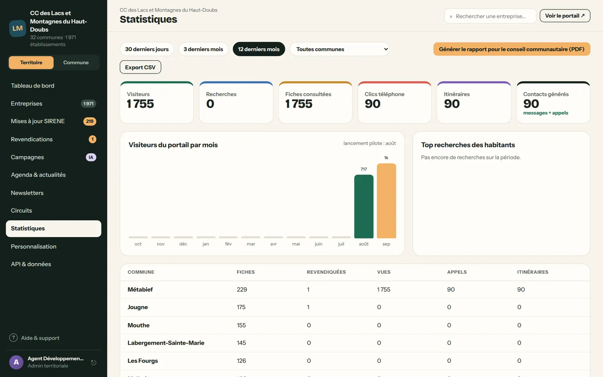
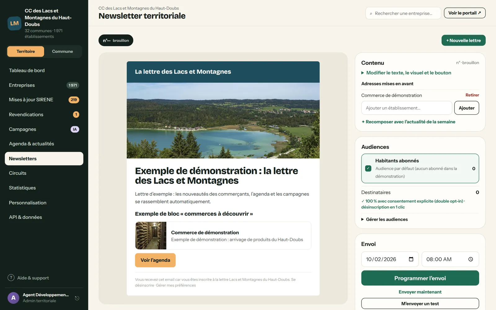
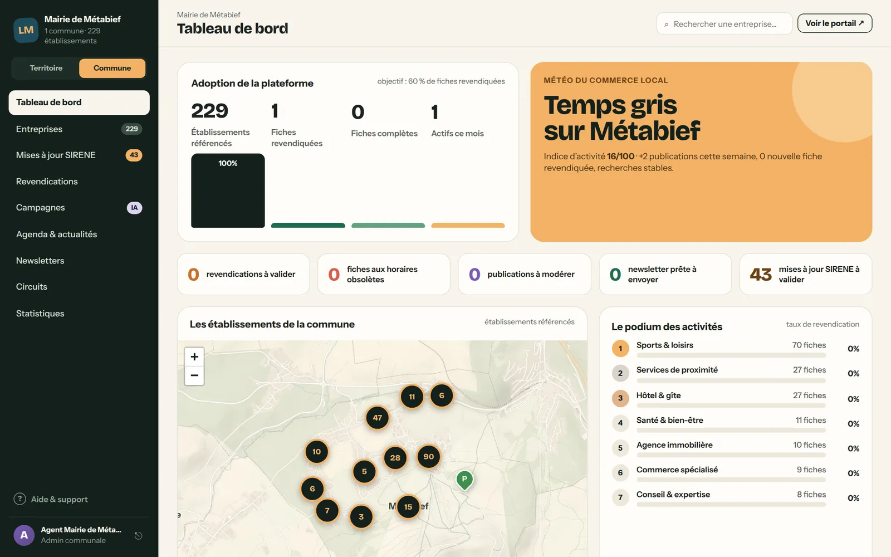
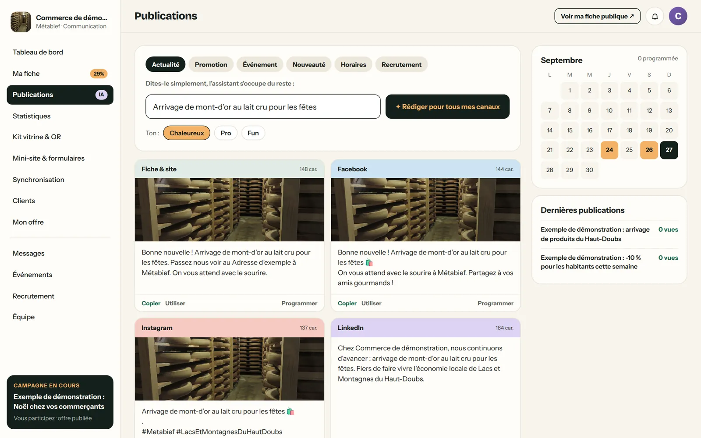

Un territoire, quatre espaces, un seul outil.
Un portail à votre nom pour les habitants et les visiteurs. Un back-office pour la communauté de communes. Un espace pour chaque mairie. Un espace pour chaque entreprise. Tout est relié : ce que l’un publie, les autres le voient.
Tout votre territoire, à portée de main.
À votre nom, à vos couleurs, à votre adresse : le portail réunit toutes les entreprises de vos communes, sur une carte, avec une recherche qui comprend les habitants.
- « Un fromage à offrir », « réparer ma chaudière », « ouvert ce soir » : l’assistant comprend la demande et répond avec les bonnes adresses.
- Une carte de tout le territoire, des filtres utiles : ouvert maintenant, fabrication locale, idées cadeaux, click & collect.
- Une page par commune, un agenda, des circuits de découverte, les offres d’emploi locales.
- En français, en anglais et en allemand, sur ordinateur comme sur téléphone, installable comme une application.


La fiche : photos, horaires, « ouvert maintenant », appel et itinéraire en un geste.

Les circuits : un passeport à tamponner chez les commerçants, une surprise au bout.

L’agenda : marchés, portes ouvertes, ateliers, animations de vos communes.

Une campagne de Noël en une phrase.
« Noël dans le Haut-Doubs : un calendrier de l’Avent avec les commerces des 32 communes. » L’assistant prépare la sélection des commerces, la page de la campagne, la lettre aux habitants et le calendrier de diffusion. Vos agents relisent, ajustent, publient.
- Campagnes thématiques : Noël, fête des mères, rentrée, circuits courts, saison touristique.
- Lettre d’information aux habitants, qui se remplit des nouveautés du territoire.
- Agenda, actualités, circuits, offres d’emploi, à publier ou à valider.
- Statistiques par commune et par activité, rapport pour le conseil en un clic.

Chaque mois, les nouvelles entreprises du registre officiel, à accueillir en un clic.

Des chiffres par commune, et le rapport pour le conseil communautaire.

La lettre aux habitants, alimentée par la vie du territoire.

Chaque maire chez soi.
Chaque commune dispose de sa page publique et, si elle le souhaite, de son propre espace : ses entreprises, ses chiffres, son actualité, ses opérations commerciales. La communauté de communes garde la vue d’ensemble ; la mairie garde la main sur sa commune.
La place des communesUne fiche offerte, des outils pour aller plus loin.
Chaque entreprise peut réclamer sa fiche et la compléter. Elle y trouve un tableau de bord, un kit vitrine avec QR code, et un assistant qui rédige ses publications pour sa fiche et ses réseaux, à partir d’une phrase.
Ce que reçoivent vos entreprises
Tout est inclus, pour tout le territoire.
Portail et carte
À votre nom, votre adresse, vos couleurs, votre logo.
Registre à jour
Import initial contrôlé et synchronisation mensuelle SIRENE.
Assistant
Recherche des habitants, campagnes, lettres, publications.
Campagnes
Calendrier de l’Avent, opérations, pages thématiques.
Lettre aux habitants
Audiences, double consentement, désinscription en un clic.
Circuits et agenda
Passeports à tamponner, marchés, animations.
Emploi local
Les offres des entreprises du territoire, en un lieu.
Trois langues
Français, anglais, allemand, traduits automatiquement.
Toutes les communes
Une page et un espace pour chaque mairie.
Statistiques
Par commune, par activité, rapport pour le conseil.
Sur téléphone
Installable comme une application, notifications.
Hébergement et support
En France, sauvegardé, mis à jour, accompagné.
Nous préparons la démonstration sur vos communes et vos entreprises, avant même notre premier rendez-vous.